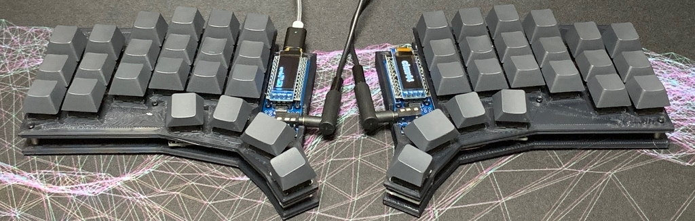
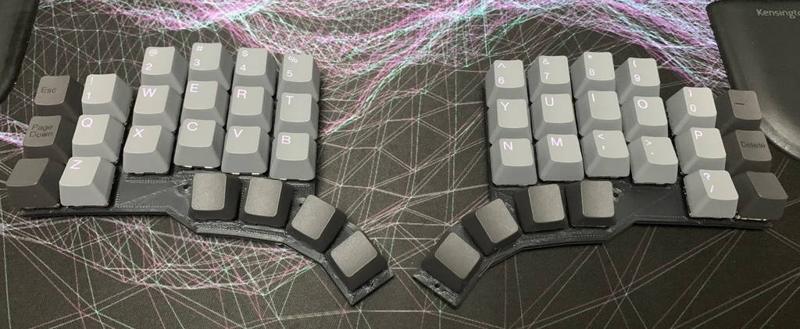
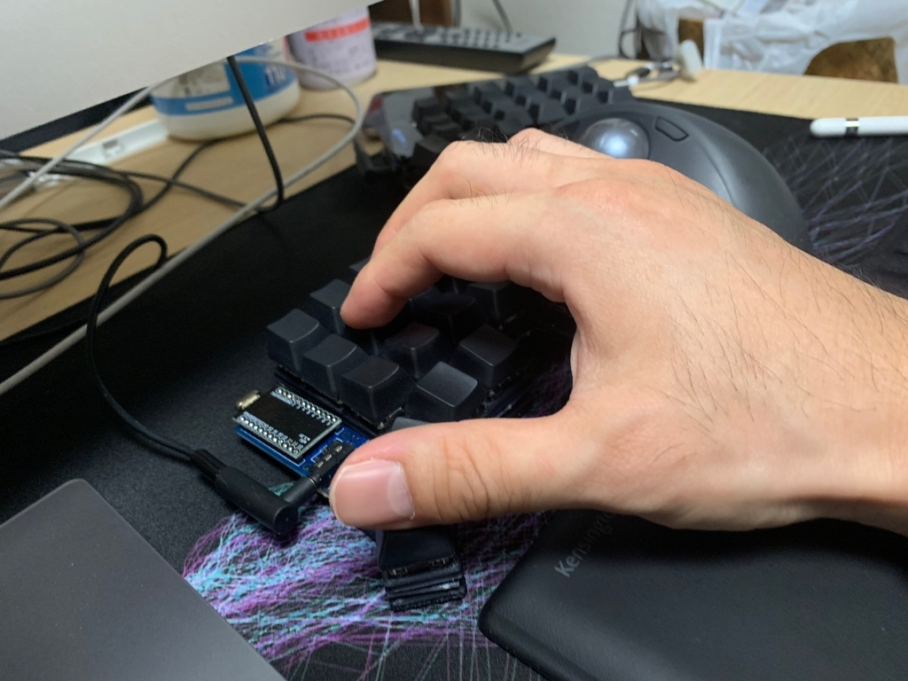
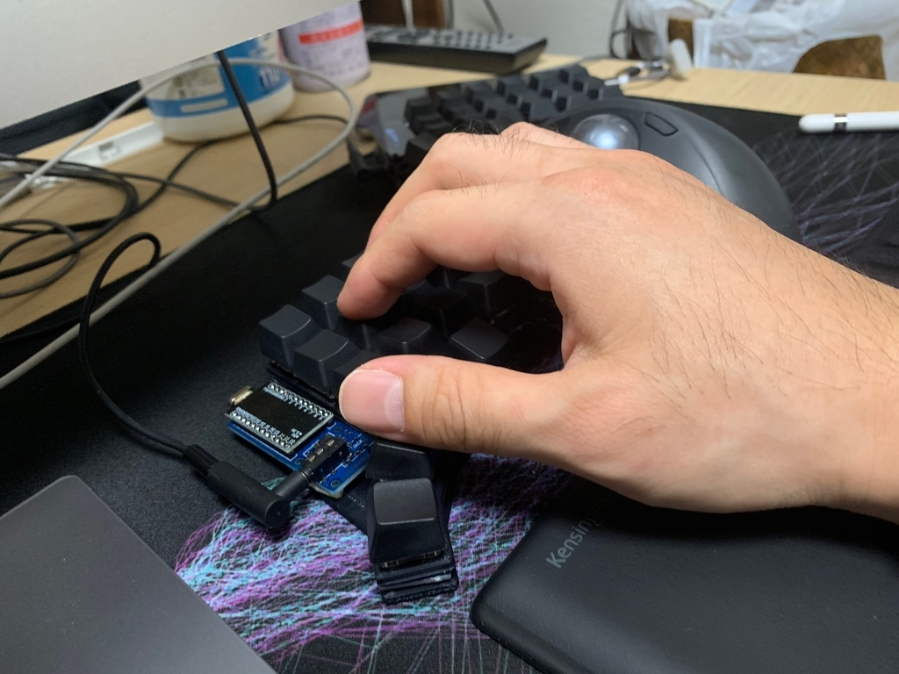
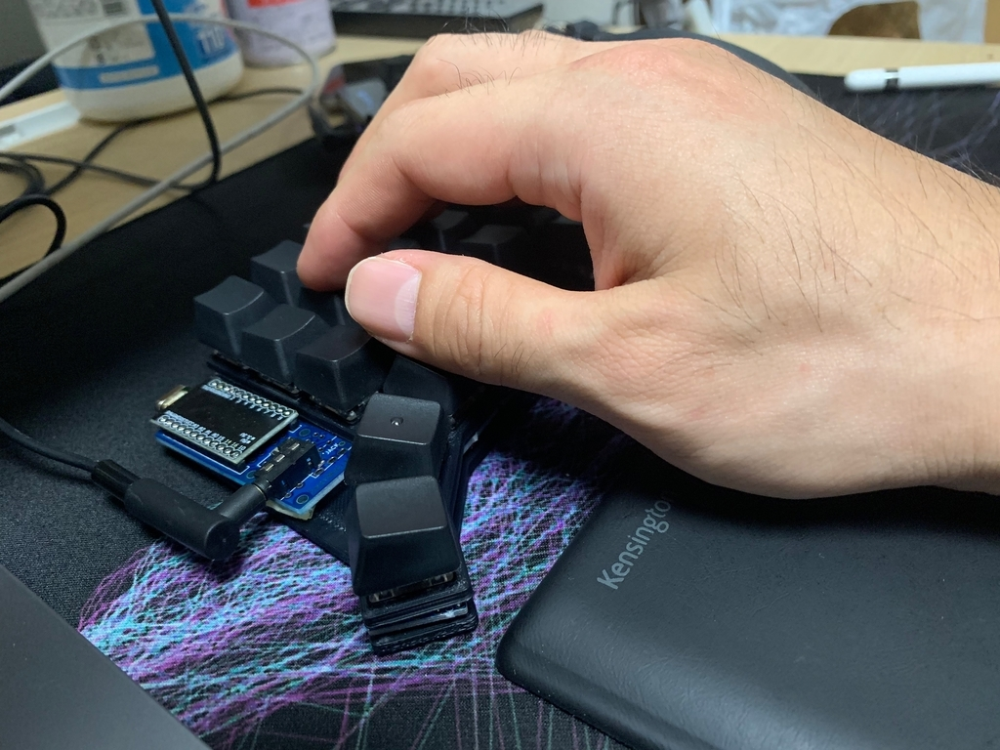
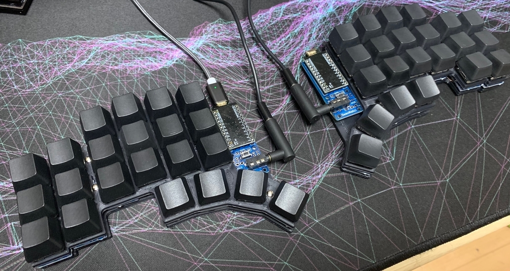
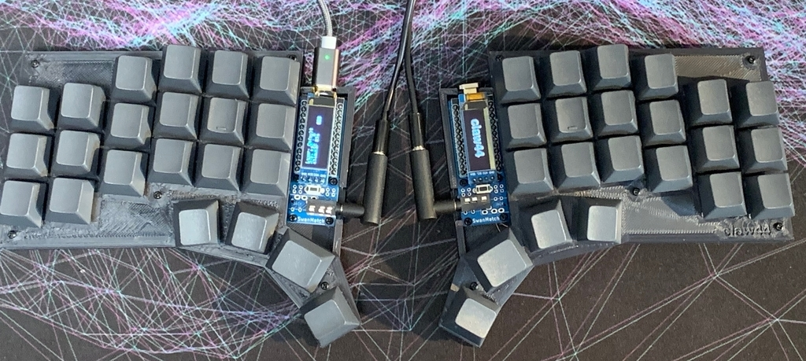

自分に合ったキーボードを設計してみようと思いたち早一ヶ月。
ようやく納得できるような形になってきました！
手の大きさも、指の長さも、打鍵の仕方も人それぞれ違うので、
たぶん待っていたんじゃ、自分の理想のキーボードは現れないだろうなあと思い、作り始めてみました。
まずは自分の手だけのことを考えて作っているので、万人向けではないかもしれないですが、共感してくれる人がいればと思いシェアします。
実現したかったこと
- キーボードに手を置いた時に、手が自然な状態に落ち着くこと
- 小指に優しく、親指をもっと活用してあげること
試作
- 普段コルネを使っているので、コルネのデータをベースに使わせてもらっています
- プレートは3Dプリンタでアクリルプレートを想定して作ってます
- 配線は無限の可能性を使わせてもらいました
- これがなかったらここまでスムーズに進まなかったと思うので感謝です！
- この辺の話もそのうち書きたいと思います
モック
-
こんな感じかな〜と。 
-
これくらいの位置で親指打鍵したい。これだと自分は角度のついてキーキャップならフィットする。（写真はモックじゃない・・）   
試作第1号

- ポイント
- コルネの親指を4キーにして、自分の手に合うように配置
- 小指2列だけを下げる
- 薬指と小指の間を少し空ける
- フィードバック
- 親指位置はとても快適だが、ホームポジションを見失う
- 小指が動くと薬指も連動して下がってくるので、薬指のポジションを見失う
- そこからぐしゃぐしゃになって小指もポジションを失う
試作第2号

- ポイント
- 親指
- ホームポジションをわかりやすくするために1.25Uに変更
- たまたま使ってないキーキャップたちを見てたら思いついた
- ホームポジションが場所を取ったので、左右のキーを快適な位置からずらさざるを得なくなった
- これが功を奏し、それぞれ親指のちょっとずつ違う部分で打鍵することになり、どのキーを押そうとしてるかがわかりやすくなった
- 一番内側のキーは角度をそこそこ急にしたので、ホームポジションと間違えることがなくなった
- ホームポジションをわかりやすくするために1.25Uに変更
- 小指
- 薬指も少し下げめに調整
- 小指は下げすぎたので、少し上げた
- 手の動きを観察すると、上のキーを押す時に若干内側に向かおうとするのでそれに合わせて全体を少し内側に傾けた
- 小指の中段外側は真横という感覚を損なわず、上段外側は届きやすくなった
- 下段外側は届きにくく、親指1キー増やしているので無くても良いかなとも思う
- ついでにルブった
- しばらくこれで使ってみようと思っていたので、良いスイッチで作ろうと思い、すごいと聞いていたAliaz + Cherry MX Silent Redのキメラをひよこのおみせで分けてもらったKrytoxでやってみました。確かにこれはすごい。Endgame感マシマシにしてくれました。
- 親指
- フィードバック
- 今のところ大きな不満点はない
- 若干、人差し指が遠くなったなあというはあるので、3Dキーキャップとか活用できないかなあと思う。
TODO
- まだケース作って手配線をしただけなので、PCBを作りたい！KiCADで配線頑張る。回路図は大丈夫なんだが配線が・・
- それに合わせてアクリルプレートかPCBプレートを作る。イラレで感覚的に配置してしまったので、KiCAD+Pythonで再現したい。
- ファームウェアをちゃんと理解して作成する
- LEDは最初は無くて良いかなあと思っている。まだ迷い中。
最後に
最初にErgoDox EZを触ったのが、今年の6月なので自キ歴半年ほどですが、久々に趣味に没頭して充実した日々でした。
初めは自分で作るなんて恐れ多いかなあと思っていましたが、先人の沼人たちが色々な知見を公開してくれているし、これを活用しない手はないなと思い始めました。
特にコルネや自作キーボード設計入門を参考にさせてもらい、@foostanさんには感謝しかないです。
自分も何か役立てることがあれば頑張っていきたいと思います！
忘年キーに参加させてもらう予定なので、このキーボードを持って行こうと思います。
興味ある方はぜひ触ってみてください！